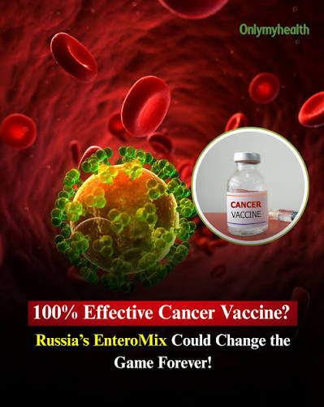

Es una mezcla experimental de cuatro virus, desarrollada en Rusia, que se estudia en personas con tumores sólidos. Los titulares hablaron de «100 % de eficacia». Esta guía explica qué es, cómo se supone que actúa y qué se ha demostrado de verdad.

Enteromix es una inmunoterapia experimental en desarrollo en el Centro Nacional de Investigación Médica de Radiología (Ministerio de Salud de Rusia), junto con el Instituto Engelhardt de Biología Molecular. Según sus desarrolladores, combina cuatro virus vivos que se administran por vía intravenosa y cuyo objetivo inicial fue el cáncer colorrectal.
Se le llama «vacuna» en los medios, pero no encaja con el sentido habitual del término. Una vacuna clásica entrena al sistema inmune antes de la enfermedad. Aquí los virus actúan directamente sobre el tumor y, de forma secundaria, despiertan la respuesta inmune. Algunos medios también lo describieron como vacuna de ARNm; según los desarrolladores, no usa tecnología de ARNm.
| Vacuna clásica | Vacuna de ARNm contra el cáncer | Virus oncolítico (Enteromix) | |
|---|---|---|---|
| Qué administra | Antígeno o microbio atenuado | Instrucciones (ARNm) para producir antígenos tumorales | Virus vivos capaces de replicarse |
| Cómo actúa | Prepara la inmunidad antes de la infección | Enseña al sistema inmune a reconocer el tumor | Destruye células tumorales y libera antígenos |
Los cuatro virus son enterovirus y comparten la misma arquitectura. Toca cada parte del esquema (es una versión simplificada).
Este es el mecanismo propuesto para los virus oncolíticos en general. Para Enteromix específicamente, falta evidencia publicada que lo confirme.
Sigue todo el proceso en 7 etapas: toca el esquema para avanzar, usa los botones o activa «Auto» con narración. Cambia al modo de comparación para ver en qué se diferencia de una vacuna de ARNm, desde la entrada a la célula.
Estos esquemas están tomados del registro del ensayo de fase I. Elige vía, esquema y dosis, pulsa «Inyectar» y mira el recorrido del virus. La animación es una ilustración conceptual: cuánto virus llega realmente al tumor no se conoce para Enteromix.
Así se decide qué dosis es segura en un estudio de fase I. Tú eres el comité: indica cuántos pacientes tuvieron una toxicidad limitante de dosis (TLD), es decir, un efecto adverso tan serio que impide subir la dosis.
Al entrar al cuerpo, el virus se encuentra con varias capas de defensa. Avanza en el tiempo con el control y toca cada actor. Los tiempos son aproximados y describen virus oncolíticos en general, no mediciones de Enteromix.
Pertenecen al género Enterovirus. Esta es la composición descrita por los desarrolladores; las secuencias genéticas completas no estaban disponibles en bases públicas hasta donde se ha podido verificar. Toca cada tarjeta.
La cifra proviene de declaraciones oficiales. Una fase I mide sobre todo seguridad, con pocos pacientes y sin grupo control. Una «respuesta inmune del 100 %» tampoco equivale a «curación del 100 %».
Según los desarrolladores, no usa ARNm: son virus vivos. La confusión parece venir de mezclarlo con otros programas rusos de vacunas personalizadas de ARNm.
Tener autorización en Rusia para hacer un ensayo no es una aprobación de la FDA ni de la EMA. Hoy solo se administra dentro de un estudio clínico.
No hay evidencia publicada que lo demuestre. Si tú o alguien cercano tiene cáncer, lo apropiado es seguir el tratamiento indicado por su equipo médico.
Los virus oncolíticos se estudian desde hace décadas y varios están aprobados. Aun así, que los datos de seguridad no estén publicados impide evaluarlo de forma independiente.
| Terapia | Virus | Situación |
|---|---|---|
| T-VEC (Imlygic) | Herpes simple modificado | Aprobada por la FDA en 2015 para melanoma |
| V937 | Coxsackievirus A21 | Estudiado en fases I–II (melanoma, vejiga, tumores sólidos) |
| PVSRIPO | Poliovirus Sabin modificado | Fase I en glioblastoma; seguridad favorable en esos estudios |
| Rigvir | ECHO-7 | Registro revocado en Letonia en 2019 por discrepancias en el contenido viral |
| Enteromix | Mezcla de 4 enterovirus | Fase I; sin publicaciones revisadas por pares |